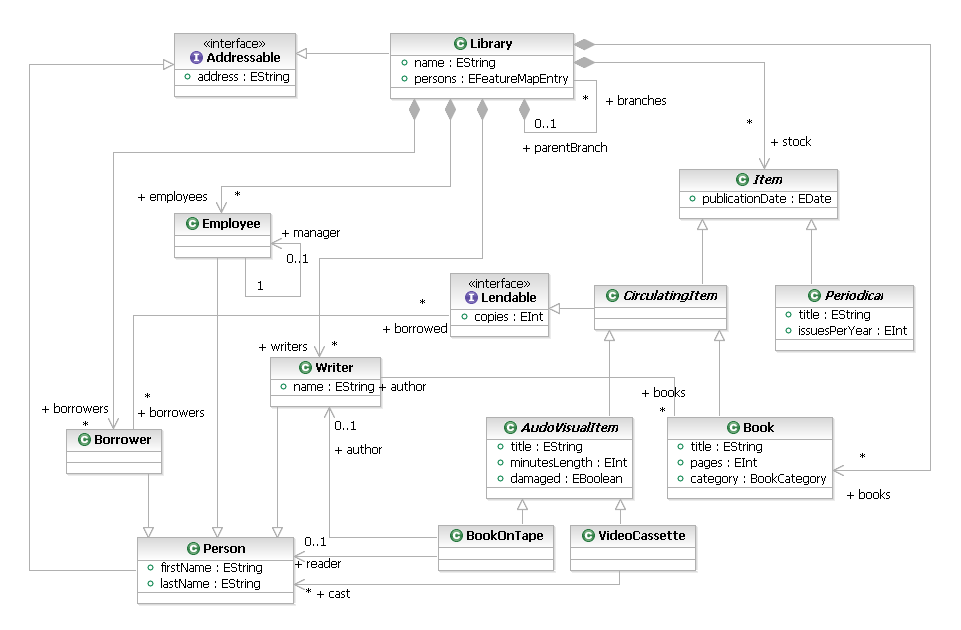

The OCL examples use the extended library meta-model as the basis for demonstrating the capabilities. The intent of using the extended library meta-model is to help the user understand the capabilities applied to a simpler domain. This is the same meta-model used by the EMF team to demonstrate the EMF capabilities. The meta-model being used looks like the following in UML.
All the generated plugins related to the library model are installed automatically as part of the individual examples. The generated editor for the library model supports multi-rooted libraries. Most of the examples contribute menu items to the main menu and the context menu of the library editor to demonstrate their respective capabilities.
Copyright (c) 2000,2005 IBM Corporation and others. All Rights Reserved.